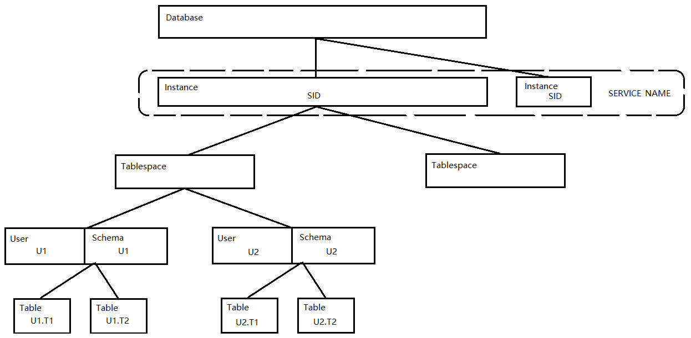

su - oracle
sqlplus /nolog
conn /as sysdba
startup
exit
lsnrctl start
exit
su - oracle
sqlplus '/as sysdba'
alter user xxxx account unlock;
# 监听: 一个listener进程, 监听客户端发来的数据. 如果不开监听, 所有客户端无法连接服务器.
# TNS: Transparence Network Substrate, 透明网络底层, 客户端与服务器通信协议
# TNS Ping 工具
tnsping
# no login 不登陆服务器的方式启动sqlplus
sqlplus /nolog
SQL> conn /as sysdba # 以系统管理员的方式连接数据库
# 监听排错
sqlplus /as sysdba # 使用操作系统认证, 不需监听
sqlplus sys/oracle # 连接本机数据库, 不需监听
sqlplus sys/oracle@orcl # 连接网络上数据库, 需要监听
su - oracle
sqlplus /nolog
conn /as sysdba
shutdown immediate
exit
lsnrctl stop
exit
lsnrctl start
lsnrctl stop
lsnrctl
status
exit
create user lwjtest indentified by lwjtest;
grant CREATE USER,DROP USER,ALTER USER ,CREATE ANY VIEW , DROP ANY VIEW,EXP_FULL_DATABASE,IMP_FULL_DATABASE, DBA,CONNECT,RESOURCE,CREATE SESSION TO lwjtest
## 导出全部
```sql
exp system/manager file=c:\dump.dump full=y
exp user1/user1 file=c:\dump.dump owner=user1
exp user1/user1 file=c:\dump.dump tables=(user1.table1,user1.table2)
imp system/manager file=c:\dump.dump full=y
imp user1/user1 file=c:\dump.dump fromuser=user1 touser=user2
imp user2/user2 file=c:\dump.dump fromuser=user1 tables=(table1,table2)
drop user user_name cascade;
drop tablespace tablespace_name INCLUDING CONTENTS;
create directory db_back as 'd:\'
select * from dba_directories;
grant read,write on directory db_back to system;
expdp system/manager schemas=system directory=db_back dumpfile=expdp.dmp
expdp lwjtest/lwjtest schemas=lwjtest directory=db_back dumpfile=lwjtest_%U.dmp parallel=4
expdp lwjtest/lwjtest schemas=lwjtest directory=db_back dumpfile=lwjtest.dmp version=10
expdp system/manager tables=a,b directory=db_back dumpfile=expdp.dmp
expdp system/manager tablespaces=c,d directory=db_back dumpfile=expdp.dmp
expdp system/manager full=y directory=db_back dumpfile=expdp.dmp
impdp system/manager remap_schema=systemfrom:systemto directory=db_back dumpfile=expdp.dmp
impdp lwjtest2/lwjtest2 remap_schema=lwjtest:lwjtest2 directory=db_back dumpfile=lwjtest_%U.dmp parallel=4
impdp system/manager tables=a,b directory=db_back dumpfile=expdp.dmp
impdp system/manager tablespaces=c,d directory=db_back dumpfile=expdp.dmp
impdp system/manager full=y directory=db_back dumpfile=expdp.dmp
SELECT * FROM DBA_SYS_PRIVS where grantee = 'CPTEST';
select * from user_tables;
select * from dba_segments where owner = 'ZR1234';
select * from DBA_DATA_FILES;
select * from DBA_FREE_SPACE;
select * from dba_segments;
select * from dba_data_files;
alter database datafile 'D:\Oracle\PRODUCT\ORADATA\TEST\USERS01.DBF' resize 50m;
alter database datafile 'D:\ORACLE\PRODUCT\ORADATA\TEST\USERS01.DBF' autoextend on next 50m maxsize 500m;
alter tablespace yourtablespacename add datafile 'd:\newtablespacefile.dbf' size 5m;
select default_tablespace from user_users;
SELECT 'alter table '||table_name||' allocate extent;' FROM user_tables WHERE num_rows=0;
执行生成出来的sql
alter system set deferred_segment_creation=false;
show parameter deferred_segment_creation;
改为FALSE后, 无论是空表还是非空表，都分配segment, 但只对修改参数后新创建的空表有效, 之前的空表还是不分配空间, 无法导出.
查找当前锁表的ORACLE_USERNAME用户名, SESSION_ID会话id
select * from v$locked_object;
查找登录用户的USERNAME, SID, SERIAL#;
select * from v$session where username = 'LWJTEST1';
补充: SID是会话id, SERIAL#是某个会话的序列号, 因为会话可能回收后再重用, 此时会话id相同, SERIAL#递增;
kill此会话;
alter system kill session '150,52883';
生成kill会话的sql;
select 'alter system kill session '''||SID||','||SERIAL#||''';' from v$session where username = 'LWJTEST1';
alter system set open_cursors=1000 scope=both;
exp cptest/cptest file=c:\cptest owner=cptest
drop user lwjtest cascade;
create user lwjtest identified by lwjtest;
grant all privileges, dba to lwjtest;
imp lwjtest/lwjtest file=c:\cptest fromuser=cptest touser=lwjtest
select username,sid,serial# from v$session;
alter system kill session'10,600';
exp cptest/cptest file=c:\cptest.dmp tables=(cptest.cont_contractext_h_temp,cptest.cont_contractext_h_history)
drop table cont_contractext_h_temp;
drop table cont_contractext_h_history;
imp lwjprivate/lwjprivate file=c:\cptest.dmp fromuser=cptest tables=(cont_contractext_h_temp,cont_contractext_h_history)
imp x/x@192.168.x.x/orcl file=c:\x.dump fromuser=x tables=(xx)
-- 查看日志文件所在路径
select * from v$diag_info where name like '%Diag%';
-- 查看归档日志位置
show parameter db_recovery_file_dest;
-- 查看归档日志大小
select * from v$recovery_file_dest;
select * from v$flash_recovery_area_usage;
-- 修改归档日志大小
alter system set db_recovery_file_dest_size=6G;
-- 删除归档日志文件 **未完成 再收藏里有
rman target sys/sysadmin@orcl
设置plsql一行展示文字个数
show linesize
set linesize 200
15. 控制文件和日志文件
控制文件记录数据库元数据（数据库名，数据文件存放位置）
select * from v$controlfile;
查看日志文件
select * from v$logfile;
查看数据库是否是归档模式
select name, log_mode from v$database;
16. 表空间的管理
查看表空间
select * from dba_tablespaces;
创建表空间
create tablespace mytablespace1
datafile 'MYTABLESPACE1.DBF' size 1g
auto extend on next 100m maxsize 10g;
移动数据文件
表空间设置成脱机状态
alter tablespace mytablespace1 offline;
手动复制数据文件到其他位置
更新数据文件名称
alter tablespace mytablespace1 rename datafile oldname to newname;
设置成联机状态
alter tablespace mytablespace1 online;
删除数据文件
alter tablespace mytablespace1 drop datafile myfilename;
17. 与数据库安全有关的对象
创建用户
create user username identified by password
default tablespace mytablespace1;
修改用户
alter user username identified account unlock;
查看用户的系统权限，用户的对象权限
DBA_SYS_PRIVS, DBA_TAB_PRIVS
19. 使用RMAN工具 Recovery Manager
sqlplus
create user RMANUSER identified by RMAN default tablespace RMANTABLESPACE
grant RECOVERY_CATALOG_OWNER to RMANUSER
rman
connect catalog RMANUSER/RMAN@service
创建恢复目录
create catalog
